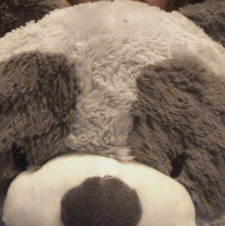

- Home
- Contact Me
- Gallery
Home
Welcome! My name is Juliana Melo and this is my portfolio website.
I do graphic design, UX design, fashion, photography, etc. Check out my gallery if you want to see my work.
I am always willing to take on a new challenge and create something to exceed expectations.
About Me
I am currently studying interactive design at Lesley University.
I am located in the Greater Boston Area, but I work well virtually too!
My experience falls into the Adobe Suite,
but I have dabbled in:
- Music
- Fashion
- Film Production
- etc.
Some of my past projects are:
- Logo creation for Third World Manga
- Go Out Doors - Medford, MA
- Center for Citizenship and Social Responsibility - Medford, MA
- Murals at Medford High School
Why Smokey?
 The name "Smokey" comes from one of the names of my stuffed animals (which is a raccoon).
This name holds meaning to me and I have created a lot of work revolving around this stuffed animal.
When it came to my brand name, I could not think of a more perfect name to describe my art style: nostalgic, meaningful, and innovative.